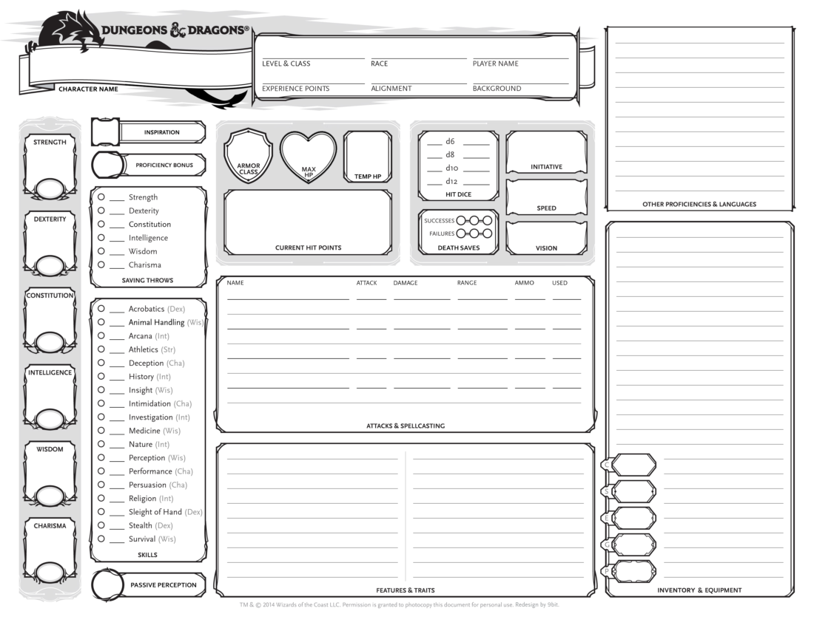
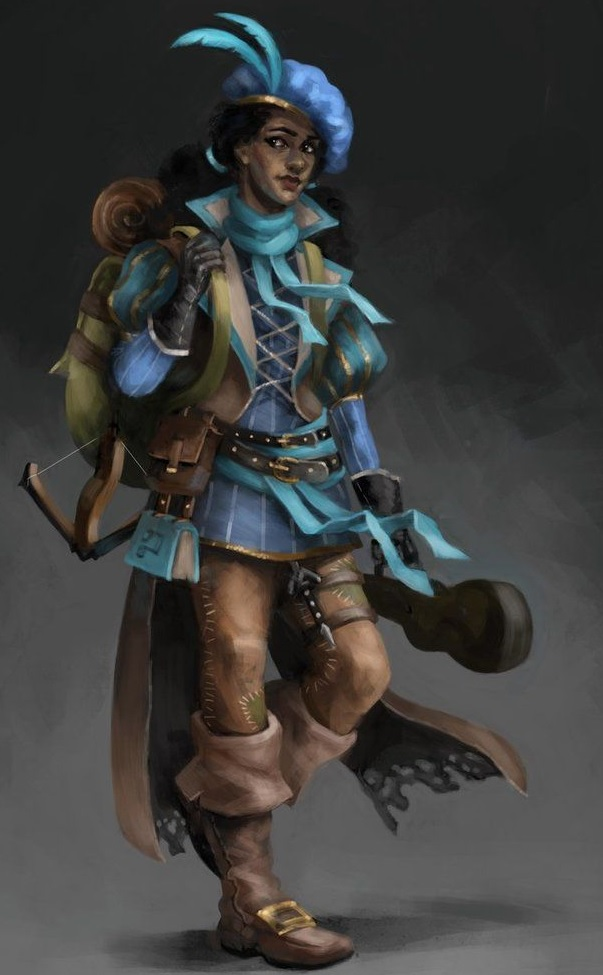
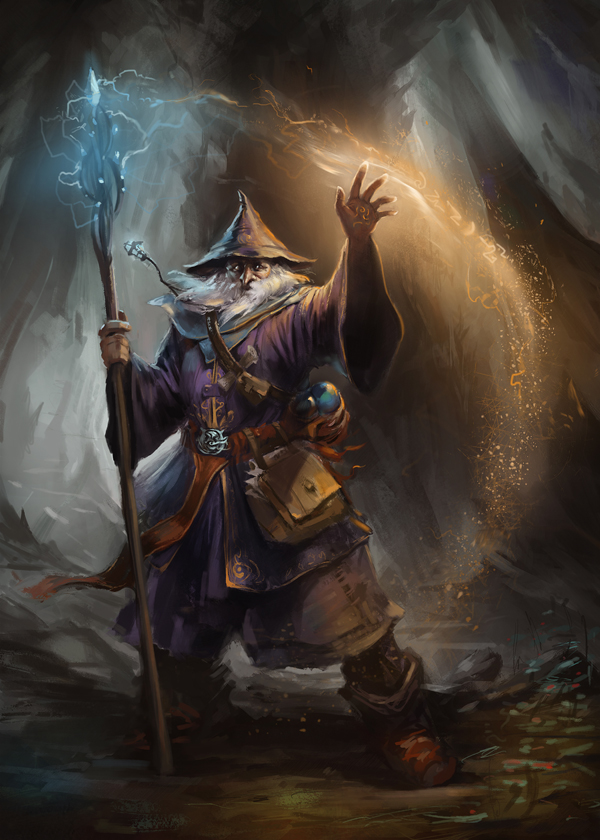

Content
(the format will look better in the website.
6 pagees will be made but the first 3 will be turned in.)
Home page
"About the Website"
Welcome to Simply Character! If you’re looking to make a simple Character for Dungeons and Dragons,
you’ve come to the right place. This website will give you a step-by-step process on how to make a
level one character, all you need is a character sheet and a pencil. These steps don’t have to be done
in any specific order, but this path can help later steps make more sense. If you change your mind on
anything, you can always backtrack steps. You can start from the beginning at step 1 or if you’ve already
started you can select the step you’re on or missed below.
"about each step(links will be provided)"
Step 1 is picking your character’s species. A species or race is what a person is. Are they a magical elf,
a loud dwarf or are they an unoriginal human. This step sets up what you are and what you look like. Step 2
will be picking your character’s class. A class is a person’s skill, what they trained to become. Are they
a brave knight ready to fight evil, a sneaky thief just looking for his next gold coin, or a powerful wizard
looking for knowledge. This step sets up a lot of what your character can do and what they’re good at. Step 3
will be setting up your character’s stats. Each character is different, some are stronger, some are quicker and
some are smarter. Your character’s stats will change how effectively your character can swing a sword, sneak around,
or recall information. Step 4 will have you pick a background and help you figure out your character’s personality.
Your character’s background is about where your character came from, what decisions lead your character to where or
who he is, what leads him to make new decisions. Step 5 will talk about your equipment and spells. Not all characters
fight with a sword or staff, choosing your equipment can get you some helpful stuff, but also some story behind your
character. Not all characters use magic but if they do, they will get to pick what spells they cast.
Images for the Home page
Step 1
"About Step 1"
Step 1 is picking your character’s species. A species or race is what a person is. Are they a magical elf,
a loud dwarf or are they an unoriginal human. This step sets up what you are and what you look like. Each
species has a list of characteristics to think about when you choose them. Those characteristics are as
follows. An Ability increase, all species give a small raise to two stats (more on this in step 3). Age,
all species have different lifespans and mature at different ages. Alignment, more will be said on alignment
in step 4, but each species tend to learn to certain alignments. Size, species have different heights and
weights, each species is also considered medium or small in size. Speed refers to how far a species can walk
in 6 seconds or one turn. Abilities are also given, which are important benefits that your character will be
able to do when necessary. Languages are also given; these help you talk with other characters who don’t speak
the common language. Lastly, some species come from different lineages or sub-species which give a few more abilities.
Images for the Page 2

Step 2
"About Step 2"
Step 2 will be picking your character’s class. A class is a person’s skill, what they trained to become.
At level one you will pick a class for your character. Think of it like a major or an occupation.
Level one gives you some base features which include the following. Hit points, this is how much
damage your character can take before fainting. Depending on your class you will have a certain amount
plus your constitution modifier (which will be talked about more in step 3). Proficiencies are given based
on the class you choose. These include armor, weapons, tools, saves, and skills. Equipment is also given;
step 5 will talk more about this. Lastly all classes give you abilities as you level up, level one included.
Images for the Page 3
 